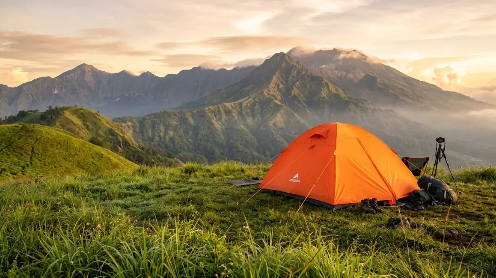
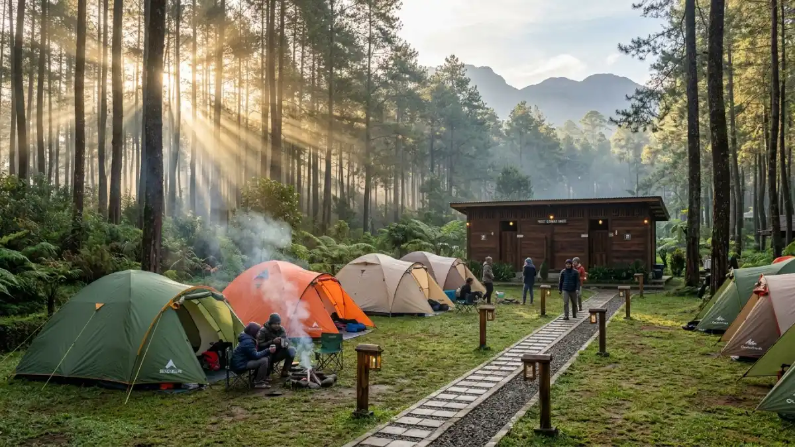

Tempat wisata camping di Indonesia menawarkan pengalaman yang sangat beragam dari pegunungan hingga tepi pantai.Tempat wisata camping di Indonesia menawarkan pengalaman bermalam di alam terbuka di ratusan lokasi mulai dari pegunungan, tepi danau, hingga hutan pinus, dengan biaya mulai dari Rp15.000 hingga Rp150.000 per malam tergantung fasilitas dan lokasi.
- Apa Itu Tempat Wisata Camping dan Mengapa Semakin Populer?
- Di Mana Saja Lokasi Tempat Wisata Camping Terbaik di Indonesia?
- Berapa Biaya Camping di Tempat Wisata Alam?
- Apa Saja Persiapan Wajib Sebelum Camping di Alam Terbuka?
- Apakah Camping Aman untuk Pemula dan Anak-Anak?
- Kesalahan Umum yang Sering Dilakukan Saat Camping
- Tips Camping Ramah Lingkungan (Leave No Trace)
- Mana yang Lebih Baik: Camping Mandiri atau Glamping?
Apa Itu Tempat Wisata Camping dan Mengapa Semakin Populer?
Tempat wisata berkemah adalah lokasi alam atau area yang dirancang khusus untuk aktivitas camping, yaitu menginap dengan menggunakan tenda di luar ruangan. Lokasi ini dapat berupa kawasan pegunungan, tepi sungai, hutan lindung, atau area wisata yang dilengkapi fasilitas dasar seperti toilet, sumber air, dan area api unggun.
Berdasarkan informasi dari Kementerian Pariwisata dan Ekonomi Kreatif (Kemenparekraf) tahun 2024, jumlah kunjungan ke destinasi wisata alam yang berfokus pada petualangan mengalami peningkatan sebesar 34% jika dibandingkan dengan tahun 2022, di mana camping menjadi salah satu aktivitas yang paling diminati orang yang usianya 18 hingga 35 tahun.
Camping populer karena beberapa alasan utama. Pertama, aktivitas ini menawarkan cara yang terjangkau untuk berwisata. Kedua, camping memberikan pengalaman langsung dengan alam yang tidak dapat digantikan penginapan konvensional.
Ketiga, meningkatnya kesadaran terhadap wisata lambat (slow travel) mendorong lebih banyak orang mencari ketenangan di luar hiruk pikuk perkotaan.
Tempat wisata camping cocok untuk berbagai kalangan: keluarga dengan anak-anak, pasangan muda, komunitas pecinta alam, hingga solo traveler yang ingin waktu refleksi pribadi.
Di Mana Saja Lokasi Tempat Wisata Camping Terbaik di Indonesia?
Indonesia memiliki ratusan lokasi camping resmi yang tersebar dari Sabang hingga Merauke, dengan karakteristik unik masing-masing wilayah. Berikut ini adalah kategori utama destinasi camping berdasarkan jenis lanskap.
Camping di Pegunungan
Kawasan pegunungan adalah pilihan paling populer untuk camping di Indonesia. Udara sejuk, pemandangan kabut pagi, dan bintang malam yang terang menjadi daya tarik utama.
Beberapa lokasi camping pegunungan yang terkenal:
- Gunung Papandayan, Garut, Jawa Barat - Tersedia area camping Pondok Saladah di ketinggian sekitar 2.665 mdpl, dilengkapi sumber air dan pemandangan kawah aktif. Biaya masuk berkisar Rp30.000 per orang.
- Gunung Prau, Wonosobo, Jawa Tengah - Populer karena treknya yang ramah pemula dengan durasi pendakian sekitar 3-4 jam. Dari puncak, pengunjung dapat menyaksikan panorama tujuh gunung sekaligus.
- Gunung Rinjani, Lombok, NTB - Destinasi premium untuk camper berpengalaman. Pemandangan Danau Segara Anak di kaldera gunung menjadikannya salah satu lokasi camping paling ikonik di Asia Tenggara.

Lokasi camping populer di Jawa menawarkan keindahan alam yang luar biasa dan fasilitas yang cukup lengkap.Camping di Tepi Danau
Camping tepi danau menawarkan suasana tenang dengan refleksi air yang memperindah matahari terbit dan terbenam. Lokasi ini umumnya lebih mudah diakses dan cocok untuk keluarga.
Beberapa lokasi camping tepi danau yang direkomendasikan:
- Danau Toba, Sumatera Utara - Area camping tersedia di beberapa titik di Pulau Samosir dan sekitarnya. Danau vulkanik terbesar di dunia ini menawarkan pengalaman camping yang unik.
- Danau Ranu Kumbolo, Lumajang, Jawa Timur - Hanya bisa dicapai dengan berjalan kaki sekitar 4-5 jam, danau ini berada di jalur pendakian Gunung Semeru dan menjadi salah satu titik camping paling banyak difoto di Indonesia.
- Danau Kelimutu, Ende, NTT - Area perkemahan tersedia di sekitar wilayah taman nasional dengan akses jalan yang cukup baik.
Camping di Hutan Pinus
Hutan pinus memberikan suasana romantis dan sejuk yang berbeda dari pegunungan terjal. Aroma pohon pinus, lantai tanah bersih, dan cahaya yang menerobos sela dedaunan menciptakan atmosfer yang khas.
Lokasi camping hutan pinus populer:
- Bukit Moko, Bandung, Jawa Barat - Hutan pinus di dataran tinggi dengan akses mudah dari kota Bandung, sekitar 1,5 jam perjalanan.
- Wanagama, Gunungkidul, Yogyakarta - Area hutan pinus seluas ratusan hektar yang dikelola oleh Universitas Gadjah Mada, menawarkan camping edukasi yang cocok untuk keluarga dan pelajar.
Camping di Kawasan Pantai
Camping di tepi pantai memungkinkan pengunjung menikmati suara ombak, matahari terbenam di cakrawala laut, dan aktivitas snorkeling atau diving di siang hari.
Beberapa lokasi camping pantai yang populer:
- Taman Nasional Baluran, Situbondo, Jawa Timur - Sering disebut "Afrika kecil di Jawa" karena savana dan pantai berpasir putih yang unik.
- Pantai Kiluan, Lampung - Terkenal sebagai lokasi pengamatan lumba-lumba dan camping di tepi pantai yang relatif terjangkau.
Berapa Biaya Camping di Tempat Wisata Alam?
Biaya camping di Indonesia sangat bervariasi tergantung jenis lokasi, fasilitas yang tersedia, dan apakah menggunakan jasa pemandu atau tidak. Secara umum, berikut gambaran kisaran biaya yang berlaku pada 2025-2026.
- Biaya tiket masuk area camping: Rp15.000 - Rp75.000 per orang per hari untuk kawasan taman nasional dan wisata alam yang dikelola resmi.
- Biaya camping mandiri (tanpa fasilitas tambahan): Rp15.000 - Rp50.000 per orang per malam, sudah termasuk tiket masuk di banyak lokasi.
- Biaya camping dengan fasilitas (glamping): Rp75.000 hingga Rp300.000 per malam untuk setiap tenda, yang sudah mencakup peralatan, kasur, dan terkadang sarapan.
- Biaya jasa pemandu: Rp90.000 – Rp200.000 per hari tergantung lokasi dan jumlah peserta.
Perlu diketahui bahwa harga di atas bersifat perkiraan umum dan dapat berubah sewaktu-waktu. Selalu konfirmasi biaya terbaru langsung ke pengelola lokasi atau platform wisata resmi sebelum berangkat.
Apa Saja Persiapan Wajib Sebelum Camping di Alam Terbuka?
Persiapan yang baik adalah kunci camping yang aman dan nyaman. Tiga kategori persiapan utama yang tidak boleh diabaikan adalah perlengkapan, perizinan, dan informasi kondisi lokasi.
Perlengkapan Dasar Camping
Perlengkapan camping yang wajib dibawa:
- Tenda yang sesuai kapasitas dan tahan cuaca
- Sleeping bag dengan spesifikasi suhu yang sesuai lokasi
- Matras atau sleeping pad untuk isolasi dari tanah dingin
- Perlengkapan memasak portable: kompor, gas, panci, alat makan
- Air minum yang cukup atau alat filter air
- Pakaian ganti, termasuk lapisan hangat untuk malam hari
- Jas hujan atau ponco
- P3K dasar
- Senter atau headlamp beserta baterai cadangan
- Peta dan kompas (atau aplikasi navigasi offline)
Izin dan Registrasi
Sebagian besar kawasan camping di Indonesia, terutama yang berada di taman nasional atau cagar alam, mewajibkan registrasi terlebih dahulu.
Beberapa kawasan membatasi jumlah pengunjung harian untuk menjaga kelestarian ekosistem. Daftarkan diri melalui website resmi pengelola atau platform registrasi online yang telah ditunjuk.
Pengecekan Cuaca dan Kondisi Jalur
Selalu cek prakiraan cuaca minimal 3 hari sebelum keberangkatan. Musim hujan (November-Maret) meningkatkan risiko longsor, banjir bandang, dan jalur licin. Musim terbaik untuk camping di Indonesia umumnya adalah April hingga Oktober.
Apakah Camping Aman untuk Pemula dan Anak-Anak?
Berkemah dapat dilakukan oleh pemula dan keluarga yang memiliki anak-anak, asalkan memilih lokasi yang sesuai tingkat pengalaman dan usia.
Untuk pemula, pilih lokasi camping yang memiliki akses kendaraan, fasilitas toilet, sumber air bersih, dan pengelola yang aktif. Hindari lokasi pendakian yang membutuhkan fisik prima untuk trip camping pertama.
Untuk anak-anak, lokasi camping hutan pinus atau tepi danau umumnya lebih aman dibandingkan puncak gunung. Pastikan selalu ada pendampingan orang dewasa yang berpengalaman, dan bawa P3K serta obat-obatan rutin yang diperlukan anak.
Kesalahan Umum yang Sering Dilakukan Saat Camping
Beberapa kesalahan paling umum yang dilakukan camper pemula:
- Tidak mengecek prakiraan cuaca sebelum berangkat, sehingga tidak siap menghadapi hujan atau angin kencang.
- Membawa terlalu banyak barang yang memberatkan ransel dan menyulitkan perjalanan.
- Tidak membawa perlengkapan P3K yang memadai.
- Membuang sampah sembarangan yang merusak ekosistem dan melanggar peraturan kawasan.
- Tidak mendaftarkan diri di pos registrasi, sehingga kondisi darurat menjadi lebih sulit ditangani.
- Meremehkan suhu malam di ketinggian, sehingga tidak membawa sleeping bag yang sesuai.
Tips Camping Ramah Lingkungan (Leave No Trace)
Prinsip Leave No Trace (LNT) adalah etika dasar yang wajib dipahami setiap camper. Prinsip ini mengajarkan bahwa alam harus ditinggalkan dalam kondisi sama baik atau lebih baik dari saat pertama kali tiba.
Prinsip LNT yang paling penting:
- Bawa pulang semua sampah tanpa terkecuali.
- Jangan memetik, memotong, atau merusak tanaman.
- Jangan membuat api di luar area yang telah ditentukan.
- Jaga jarak aman dari satwa liar dan jangan memberi makan hewan.
- Pilih jalur yang sudah ada dan jangan membuat jalur baru.
Mana yang Lebih Baik: Camping Mandiri atau Glamping?
Camping mandiri dan glamping memiliki segmen penggemar masing-masing yang berbeda kebutuhan dan preferensinya. Camping mandiri cocok untuk mereka yang ingin pengalaman autentik di alam, memiliki pengalaman dan perlengkapan sendiri, serta menginginkan biaya yang lebih hemat.
Glamping (glamorous camping) cocok untuk pemula, keluarga dengan anak kecil, atau mereka yang ingin menikmati alam tanpa perlu menyiapkan perlengkapan.
Dari sisi biaya, camping mandiri jauh lebih hemat. Dari sisi kenyamanan, glamping menawarkan kasur, pencahayaan, dan kadang kamar mandi pribadi. Keduanya sama-sama valid tergantung tujuan dan preferensi pribadi.
Tempat wisata camping di Indonesia menawarkan pilihan yang sangat beragam untuk semua jenis wisatawan. Untuk pemula, mulailah dari lokasi camping yang mudah diakses seperti hutan pinus atau tepi danau dengan fasilitas lengkap. Untuk yang sudah berpengalaman, kawasan gunung dengan pemandangan epik seperti Ranu Kumbolo atau puncak Gunung Prau bisa menjadi tantangan berikutnya. Tiga hal yang selalu harus diingat sebelum berangkat: persiapkan perlengkapan sesuai kebutuhan, daftarkan diri ke pengelola resmi, dan selalu jaga kebersihan serta kelestarian alam yang dikunjungi.
FAQ
1. Apakah semua lokasi camping di Indonesia berbayar?
Sebagian besar lokasi camping resmi di Indonesia berbayar, terutama yang berada di kawasan taman nasional atau wisata yang dikelola pemerintah daerah. Biayanya bervariasi, namun umumnya terjangkau antara Rp15.000 hingga Rp75.000 per orang. Beberapa lokasi swasta atau komunitas mungkin gratis, namun selalu verifikasi ke pengelola setempat.
2. Apa yang harus dilakukan jika cuaca tiba-tiba buruk saat camping?
Jika cuaca memburuk, segera cari perlindungan di tenda atau shelter yang tersedia. Hindari berteduh di bawah pohon besar saat petir. Segera hubungi pemandu atau petugas pos jaga jika kondisi sangat berbahaya. Jangan memaksakan diri untuk melanjutkan perjalanan dalam kondisi hujan deras dan angin kencang.
3. Bagaimana cara menemukan tempat wisata camping yang resmi dan aman?
Gunakan sumber informasi resmi seperti website Taman Nasional, Dinas Pariwisata daerah, atau platform wisata terpercaya. Bergabung dengan komunitas pecinta alam lokal juga bisa menjadi sumber rekomendasi yang akurat berdasarkan pengalaman nyata.